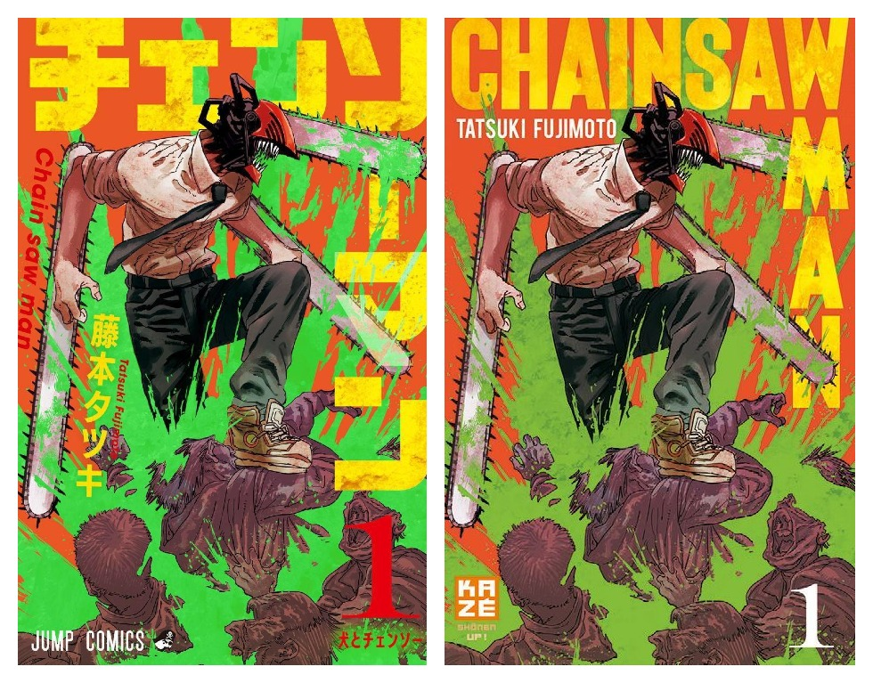

Home
News
Leaks
More
Its chapters have been collected in 12 tankōbon volumes as of October 2022. Chainsaw Man follows the story of Denji, an impoverished young man who makes a contract that fuses his body with that of a dog-like devil named Pochita, granting him the ability to transform parts of his body into chainsaws.